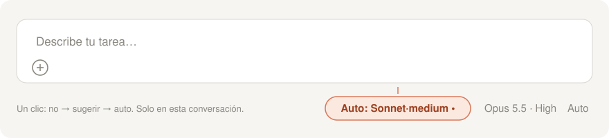
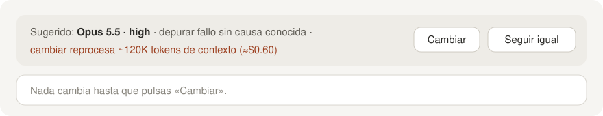
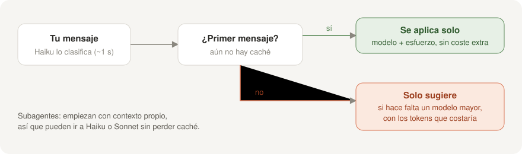

Haiku para lo simple, Sonnet para lo acotado, Opus por defecto, Fable para lo ambicioso. model-router lo elige siguiendo la guía de Anthropic y nunca reprocesa tu contexto sin preguntarte.

No → sugerir → auto. Cada conversación recuerda su modo y su modelo; las nuevas empiezan apagadas.
Modelo y esfuerzo según la guía de Anthropic y cuatro preguntas: ¿ida y vuelta? ¿un error sale caro? ¿trabajo largo y crítico?
Explore a Haiku; los demás, según la tarea y nunca por encima del modelo de la conversación.
Cambiar de modelo a mitad de conversación obliga a reprocesar todo el contexto, porque la caché es de cada modelo. Por eso model-router solo cambia solo en el primer mensaje. Después sugiere, enseña cuántos tokens costaría, y espera a que pulses Cambiar.


En una sesión de Claude Code en el terminal:
/plugin install model-router --marketplace LuisPuertollano/claude-model-router
Responde y a Add marketplace? y elige el ámbito user. Desde una consola:
claude plugin install model-router --marketplace LuisPuertollano/claude-model-router
En la app de escritorio (pestaña Code): + junto al cuadro de texto → Plugins → Add marketplace con LuisPuertollano/claude-model-router → Add plugin.
| Control | Efecto (solo en esta conversación) |
|---|---|
| Modelo auto: no | Apagado: manda el modelo de la app. |
| Modelo: sugerir | Muestra la sugerencia; nada cambia sin Cambiar. |
| Auto: Sonnet·medium | Elige en el primer mensaje; luego solo sugiere subir, con su coste. |
/modelo opus high | Fija modelo y esfuerzo. |
/modelo libre | Vuelve al modelo de la app. |